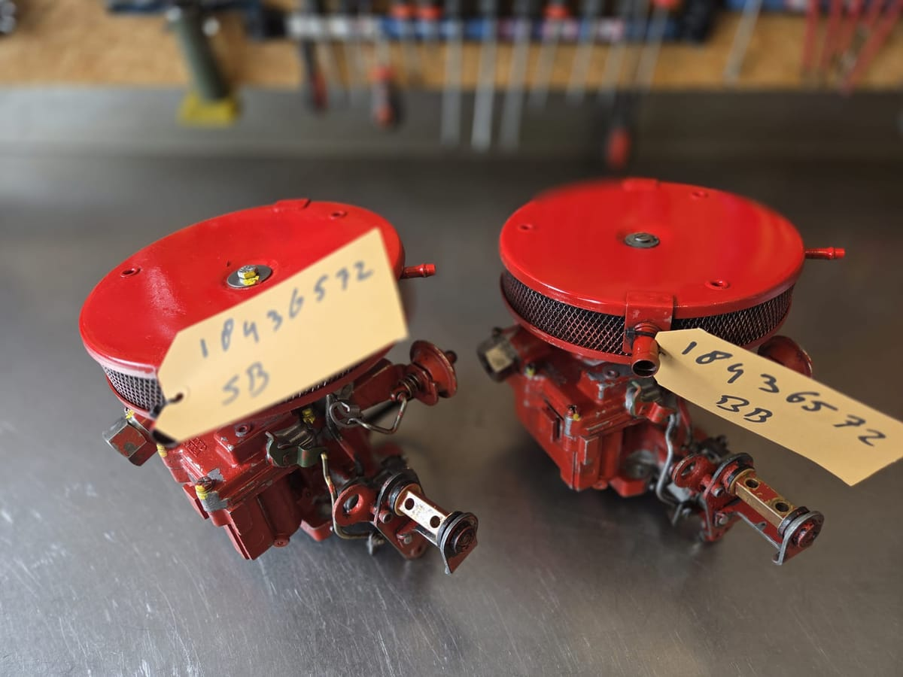

Of je nu een sloep, motorboot of een dinghy met buitenboordmotor hebt: marinecarburateurs krijgen het zwaar te verduren. Moderne benzine zit vol ethanol en lang stilliggen tussen de vaarseizoenen door doet de rest, waardoor de sproeiers en vlotterkamers vervuilen en verstoppen. Binnenboord of buitenboord, de meeste start- en loopproblemen op het water komen door precies één ding: een vervuilde of versleten carburateur. Wij maken 'm tot in detail weer als nieuw, zodat jij weer zorgeloos het water op kunt.

Carburateur Service NederlandKlik op de klachten die je herkent. Wij vertellen je direct of een revisie de oplossing is.
Hoe meer je herkent, hoe groter de kans dat de carburateur toe is aan een revisie.
Een benzinelekkage of sterke benzinegeur is in een afgesloten motorruimte of op het water extra brandgevaarlijk: dampen blijven hangen en er is geen plek om snel weg te komen. En een motor die slecht loopt, kan je net daar in de steek laten waar je niet zomaar aan de kant zet. Daarnaast heeft benzine een koelende werking: loopt je carburateur te arm, dan wordt de verbranding heter dan bedoeld en kan dat op den duur kleppen en zuigers beschadigen. Een revisie is dus niet alleen comfort en zuinigheid, maar vooral het beschermen van je motor en jezelf.
Liever niet zelf aan boord sleutelen? Onze eigen marinemonteur komt naar je toe, in de jachthaven of op locatie. We demonteren de carburateur(s) aan boord, reviseren ze tot in detail in onze werkplaats, en monteren en stellen ze daarna weer perfect af op je boot. Ook een complete beurt op locatie behoort tot de mogelijkheden. Laat het ons weten in je aanvraag of je een monteur wilt.
Vraag service op locatie aan →Een vaste, transparante aanpak. Je weet precies wat er met jouw carburateur gebeurt.
Bij binnenkomst maken we foto's en inspecteren we de carburateur grondig.
Met ultrasoonreiniging verwijderen we alle vuil en aanslag, ook op onbereikbare plekken.
Versleten delen vervangen we door uitsluitend A-kwaliteit onderdelen.
We vergelijken jouw afstelling met de originele fabrieksinstellingen en stellen exact af.
Elke carburateur gaat langs onze uitgebreide eindcontrolelijst voordat 'ie terug gaat.
We doen carburateurs, en niets anders. Die focus zie je terug in het resultaat.
Tot diep in elk kanaaltje schoon, daar waar een borstel niet komt.
Alleen revisiekits en delen die we zelf vertrouwen.
Foto's en metingen bij binnenkomst, jij ziet wat er is gedaan.
Exact afgesteld volgens de originele specificaties.
Grote kans dat we 'm kennen, en al tientallen keren hebben gereviseerd.
Een eerlijke investering in de betrouwbaarheid van je boot.
Vul dit in, je hoort meestal binnen één werkdag wat we voor je kunnen doen.
of bel direct: +31 6 53864208